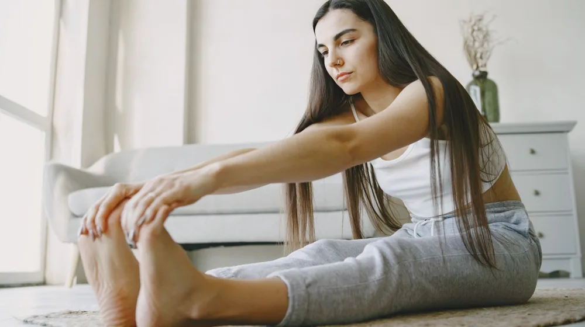

아침 vs 저녁 스트레칭, 언제 해야 효과 극대화될까요?
사진: MART PRODUCTION / Pexels (무료 이미지, 출처 표기)
아침에 일어나자마자 몸을 늘릴지, 잠들기 전 하루의 피로를 풀지 고민해 보셨나요? 스트레칭은 언제 하느냐에 따라 기대하는 효과와 방식이 달라집니다. 이 글에서는 아침과 저녁 스트레칭의 차이점과 각 시간대에 최적화된 루틴을 자세히 안내해 드립니다.
아침 스트레칭, 왜 필요할까요?

수면 중 굳었던 근육과 관절을 깨워 혈액순환을 촉진하고, 몸을 활성화하여 하루를 활기차게 시작하도록 돕습니다. 뇌에도 산소 공급이 원활해져 집중력 향상에 긍정적인 영향을 줄 수 있습니다.
아침에는 몸에 무리를 주지 않는 부드러운 동적(dynamic) 스트레칭이 적합합니다. 관절 가동 범위를 서서히 늘려주며 큰 근육 위주로 스트레칭하는 것이 좋습니다.
고양이-소 자세, 팔다리 돌리기, 허리 옆으로 굽히기 등이 대표적입니다. 각 동작을 5~10회 반복하며 천천히 몸을 이완시킵니다.
저녁 스트레칭, 어떤 효과를 기대할 수 있을까요?
하루 동안 쌓인 근육의 긴장을 풀어주고 이완시켜 피로를 줄입니다. 특히 수면의 질을 높이는 데 도움을 주어 숙면을 유도하는 효과가 있습니다.
스트레스로 경직된 몸과 마음을 진정시키는 데도 좋습니다. 저녁에는 근육을 천천히 늘려주는 정적(static) 스트레칭이 효과적입니다. 깊게 이완시키는 동작을 통해 몸의 긴장을 해소하는 데 집중합니다.
햄스트링 늘리기, 어깨 및 목 스트레칭, 누워서 다리 들어 올리기 등이 있습니다. 각 자세를 15~30초간 유지하며 근육의 이완을 느끼는 것이 중요합니다.
아침 vs 저녁 스트레칭, 루틴 비교 및 추천 운동
아래 표는 아침과 저녁 스트레칭의 주요 차이점과 추천 운동을 비교하여 보여줍니다. 자신의 건강 목표와 생활 습관에 맞춰 적절한 루틴을 선택해 보세요.
스트레칭 효과를 높이는 공통 팁
- 깊은 호흡: 스트레칭 시 깊고 규칙적인 호흡은 근육 이완과 통증 완화에 필수적입니다. 숨을 내쉬면서 근육을 늘리면 더욱 효과적입니다.
- 정확한 자세: 올바른 자세는 부상 방지와 효과 증대에 중요합니다. 거울을 보거나 전문가의 도움을 받아 정확한 자세를 익히는 것이 좋습니다.
- 꾸준함 유지: 매일 짧은 시간이라도 꾸준히 스트레칭하는 것이 가장 중요합니다. 유연성과 신체 기능이 점진적으로 향상되는 것을 경험할 수 있습니다.
스트레칭 시 놓치지 말아야 할 주의사항
스트레칭은 시원한 느낌이 들어야 하며, 절대 고통스러워서는 안 됩니다. 통증을 참아가며 무리하게 스트레칭하면 오히려 근육이나 인대에 손상을 줄 수 있습니다. 자신의 몸이 보내는 신호에 귀 기울이세요.
기존에 부상이 있는 경우, 스트레칭 전에 반드시 의사나 물리치료사와 상담해야 합니다. 부상 부위에 따라 피해야 할 동작이 있을 수 있으니 전문가의 조언을 구하는 것이 현명합니다.
특히 아침에는 충분한 준비 운동 없이 갑자기 격렬한 스트레칭을 하지 않도록 주의합니다. 가벼운 걷기나 제자리 걷기로 몸을 데운 후 시작하는 것이 좋습니다.
아침과 저녁 스트레칭은 각기 다른 목적과 효과를 지닙니다. 자신의 생활 패턴과 건강 목표에 맞춰 적절한 루틴을 선택하고 꾸준히 실천한다면, 더욱 건강하고 활기찬 일상을 만들 수 있습니다. 오늘부터 나만의 스트레칭 루틴을 시작해 보는 건 어떨까요?
🔗 이 글도 함께 보면 좋아요: 필라테스 vs 요가, 나에게 딱 맞는 운동은? 5가지 핵심 차이 비교
관련 추천 상품
요가매트, 폼롤러, 스트레칭 밴드 관련 인기 상품 보러가기
이 포스팅은 쿠팡 파트너스 활동의 일환으로, 이에 따른 일정액의 수수료를 제공받습니다.